Как читать авторский курс и нормативные материалы
Это учебные материалы, а не заключение о соответствии конкретного продукта. Организационные модели курса отделяйте от терминов стандарта: ППК в опубликованном проекте — машиночитаемый перечень, а живой реестр его версий является практикой сопровождения. Термин OSA в разных материалах имеет разный охват. Статус и обязательность нормативного документа проверяются отдельно; проект КАПО опубликован как проект первой редакции.
Конспект: Защита цепочки поставки и OSA
Зачем модуль
Когда разработчик выполняет npm install или pip install, пакет скачивается, и его установочные скрипты (postinstall, setup.py) выполняются на машине разработчика или на раннере CI до того, как кто-либо посмотрит на состав сборки. SCA в этот момент уже опоздал: он анализирует то, что собрано. Модуль закрывает разрыв между «пакет запросили» и «пакет проанализировали» — то есть отвечает на вопрос, как не пустить опасный компонент в периметр, а не как найти его постфактум.
Масштаб проблемы конкретен: в открытых экосистемах обнаруживается более 1000 новых вредоносных пакетов в месяц, а число атак на цепочки поставки за год выросло кратно. Это не абстрактная угроза — это поток, который надо фильтровать на входе.
Ключевые идеи
Таксономия атак (по систематизации supply-chain атак, arxiv 2204.04008) делится на три класса, и под каждый нужен свой контроль:
- Вредоносный пакет как нормальный — пакет создаётся сразу с нагрузкой и раскручивается в сообществе. Пример нагрузки: кража переменных окружения, бэкдор, шифровальщик.
- Путаница в названиях — typosquatting (
djngo,djangaвместоdjango), combosquatting (requests-dev), brandjacking (aws-…,google-…), built-in confusion (имя как у стандартного модуля), и slopsquatting — пакеты-галлюцинации, которые LLM «рекомендует» в коде (в исследовании arxiv 2406.10279 до 20% рекомендаций — несуществующие пакеты, 58% галлюцинаций повторяются). Сюда же dependency confusion: пакетный менеджер тянет публичную версию вместо внутренней, если публичный индекс отдаёт более высокий номер. - Подрыв легитимного пакета — компрометация апстрима: вредоносный MR, захват майнтейнерства, взлом системы сборки. Каноничные примеры — бэкдор в XZ Utils (нацелен на
sshd) и червь Shai-Hulud в npm (искал секреты через TruffleHog, публиковал их и дописывал себя в пакеты жертвы, затронуто >500 проектов). Отдельный класс — protestware: майнтейнер сам встраивает деструктив (node-ipc,colors,faker,es5-ext).
OSA как превентивный контур. Open Source Analysis ставится между разработчиком/CI и публичным реестром. Каждый запрашиваемый компонент сканируется, сверяется с фидами malware/protestware и политиками безопасности, и либо проходит, либо помещается в карантин, либо блокируется. Архитектурно это реализуется двумя способами:
- Плагин к менеджеру артефактов (Nexus, JFrog Artifactory) — работает в блокирующем режиме: репозиторий физически не отдаёт запрещённый пакет.
- OSA Proxy — подключается без привязки к хранилищу, проксирует трафик пакетного менеджера и на лету исключает уязвимые/вредоносные версии из выдачи индекса. Регистри вроде Harbor, GitLab Container Registry поддерживаются в сканирующем (наблюдающем) режиме.
OSA — это не «SCA, но раньше» Частая ошибка: думать, что OSA и SCA — одно и то же на разных этапах. У них разная точка контроля и разный отказ. OSA отвечает на запрос «дай мне пакет X@1.2.3» вердиктом да/карантин/нет — это контроль доступа. SCA отвечает на вопрос «из чего собран релиз и где в нём CVE» — это контроль состава. OSA может блокировать то, чего ещё нет в вашем SBOM; SCA видит только то, что уже вошло в сборку.
Как выглядит на практике
Поток пакета через OSA-контур:

Пример правила политики (логика реальных OSA-движков с объединением условий):
| Условие срабатывания | Действие |
|---|---|
| Пакет из stop-list или определён как malware | Заблокировать, задача на 3-ю линию |
| Версия выпущена позже даты X / «слишком молодая» | Карантин + задача на SAST-ревью |
critical in direct deps + has_exploit + has_fixed_version |
Задача напрямую разработчику |
| Нарушена лицензионная чистота | Задача на замену + уведомить юристов |
«Слишком молодая версия» — рабочий приём против компрометации апстрима: пакет, выпущенный 2 часа назад, держат в карантине N дней, пока сообщество не успеет отреагировать.
Слепые зоны именно этой темы
- Скрипты установки. Даже корректный по составу пакет может нести вредоносный
postinstall. Запрет исполнения install-скриптов (npm install --ignore-scripts) — отдельный контроль, не заменяемый сканом. - Dependency confusion на приватных именах. Если внутренние пакеты не зарезервированы в публичном индексе и не приоритизированы в конфиге менеджера, OSA-proxy не спасёт от подмены — нужна ещё и правильная настройка scope/index-url.
- Сканирующий режим ≠ блокировка. Harbor/GitLab в наблюдающем режиме покажут проблему, но пакет уже доставлен. Не путать «увидели» с «не пустили».
- Карантин без SLA. Если на «молодые» версии нет процедуры разбора, карантин превращается в стоп-кран для разработки, и его отключают.
Связь с нормативкой
ГОСТ Р 56939-2024 прямо требует контролировать зависящие от сторонних поставщиков элементы разработки и анализировать код, полученный через цепочки поставок, на предмет внедрения ВПО. OSA-контур — это инженерная реализация именно этого требования: точка, где код из апстрима проверяется до включения в разработку. Также: контроль использования предсобранного поставщиком ПО (Docker-образы проходят через OSA так же, как пакеты).
Что уносим в работу
- OSA и SCA — два контура, а не два названия одного: OSA на входе (доступ), SCA по составу. Развёрнуты должны быть оба.
- Под три класса атак — три контроля: фиксация версий и
--ignore-scripts(вредоносный пакет), запрет неизвестного через OSA (путаница в именах), аудит + карантин «молодых» версий (подрыв апстрима). - Блокирующий режим (плагин к Nexus/JFrog) даёт реальный отказ; сканирующий — только видимость. Для критичных потоков нужен блокирующий.
- Политика обязана включать карантин с SLA и процедуру исключений — иначе её отключат как мешающую.
Практики: П17. OSA controlled repository policy (warmup → monitoring → blocking, audit trail), П18. OSA Proxy режимы и ограничения (где proxy работает, а где нет).